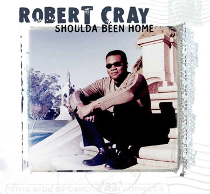

Shoulda Been Home - Robert Cray

 Songs on the CD
Songs on the CD
- Baby's Arms (R. Cray)
- Already Gone (R. Cray)
- Anytime (J. Pugh)
- Love Sickness (B. Rice)
- I'm Afraid (R. Cray)
- No One Special (R. Cray)
- Out of Eden (J. Pugh)
- Cry for Me Baby (M. R. London)
- Far Away (R. Cray, S. Turner-Cray)
- Renew Blues (R. Cray, K. Hayes, J. Pugh, K. Sevareid)
- Help Me Forget (R. Cray)
- The 12 Year Old Boy (M.R. London)
The Robert Cray Band
Robert Cray - guitars, vocals
Jim Pugh - keyboards
Karl Sevareid - bass
Kevin Hayes - drums
Some brief credits:
© Rykodisc
Producer - Steve Jordan
Representation - Mike Kappus - The Rosebud Agency
Other Shoulda Been Home links
Back to my Cray page
Created: 4/22/01
Mod: 7/17/03
By: rwhiffen